Aqua Bee is a project I worked on aiming to solve and change how aquarists and hobbyists can
care
for their fish with modern technology.
My Role
I was responsible for the whole project from development to designing due to this being a
personal project I've worked on aimed to solve the way hobbyists and aquarists care for their
fish.
Timeline
2018: Designer
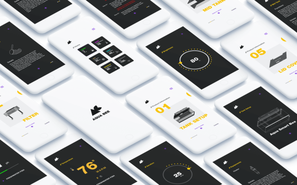
The Objective
Creating a product that changes how aquarists and hobbyists own pet fishes.
The project is geared towards aquarists and hobbyists by changing how aquariums interact with users.
Aqua Bee's aquarium enables users to monitor the temperature, ph level, and controllability through
the app by users.
The Problem
Simplifying daunting tasks for aquarists with modern technology.
Common problems and daunting tasks are prevalent for many aquarists and fish owners needing to check
their aquarium's PH level, temperature, etc. There are also problems where adjusting the lighting,
filtration speed, temperature, and other necessities in a regular aquarium often require to get your
hand dirty, wet, and in which this also affects the water quality.
The Strategy
Research, learn & discover to craft & design the product.
Strategy plans
Design an app that's delightful, accessible, user friendly, and straightforward.
Research and understand competitors, products, existing apps, platforms, and users.
The solution
Designing a product that helps provide specific detailed information & controllability for
aquarists & hobbyists.
Designing an app for usability and ease of accessibility
Usability and ease of accessibility were two significant problems that the app's home screen had
to resolve. Based on user data, there are multiple functionalities of importance that were
needed to enhance the daily lives of aquarists. The main features consist of filtration control,
light control, data information of the temperature, and ph level.
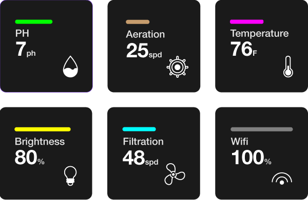
Opensource icons were used for the design.
Controllability, freedom, and customization
Implementing controllability and customization is vital for Aqua Bee's product, as this allows
users to customize and adjust the functionalities within a set of limitations. These principles
enable maximum yield in user experience for individuals and also gives users the highest
satisfaction in terms of freedom and delightfulness within the product.
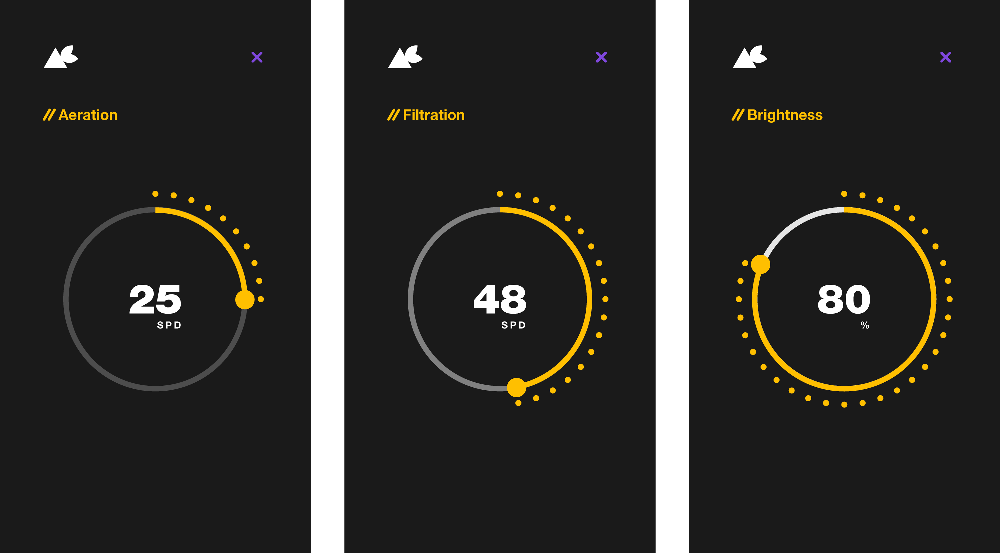
Minimal learning curve
Insights and understanding of user behavior helped drive the design decision making of the home
screen for where the core functionalities would live. Findability and usability were also the
core driving principles of creating a simplistic interface aimed to reduce the required learning
curve and attention span from users.
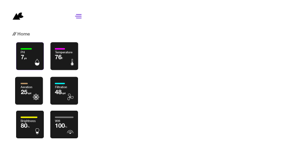
Brand familiarity and consistency
Brand identity and a set of a design system are essential to keep consistency across the whole
platform of the app and website for Aqua Bee. Branding colors were applied on the web and app to
keep a consistent brand identity of trust, familiarity, and differences among other competing
companies.
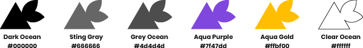
Research
How'd I got here? What was the design and development process?
Researching products, companies, and structural build based on modern fish tanks were the initial
steps of solving the design problems that aquarists routinely goes through. Learning about who my
target audiences are, understanding their behavior, and needs were also essential user data that
helped shape my design decisions. During the process of designing the product, I faced multiple
constraints:
The lack of knowledge in what functionality, parts, and technology could be implemented in
Aqua Bee's fish tank was challenging.
User and product research was limited due to the constraints of the given project timeline
Brainstorm, sketch, and research
Sketching and research were the initial steps of developing the concept and visual idea of the
product. It's also the early phases of my design process where brainstorming, site mapping,
information architecture, and quick wireframing sketches would help shape the final outcome of this
project.
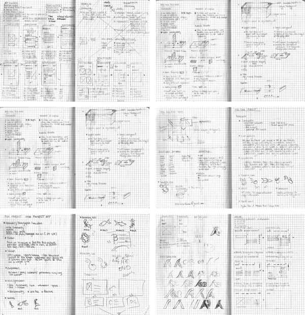
Competitors
Researching competitors was essential to understanding what improvements, threats, strengths, and
weaknesses that the current product stands within the market. A list of competitors consist of:
Petco, PetSmart, Live Aquaria, BigAlsPets, Marine Depot.
Target audience
Given the limited amount of time to gather user research based on my targeted audiences, I was able
to acquire some insights in the age group of fish hobbyists to gauge and help inform the product
design process.
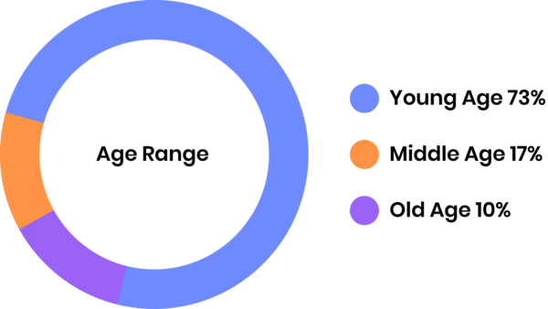
Sitemap
Creating a sitemap helped me visualize the overall pages, screen, and layout of potential
possibilities that could be implemented, but to also eliminate any unnecessary, redundant sections.
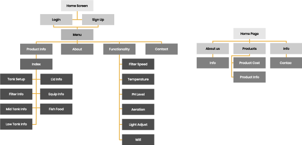
User testing & wireframing
Based on data, research, and insights gathered throughout the initial stages of brainstorming and
sketching. I developed a quick wireframe prototype to test out new ideas, design, and layout to
multiple users to gain quality insights, feedback, and user behavior based on their thoughts and
interaction throughout the process.
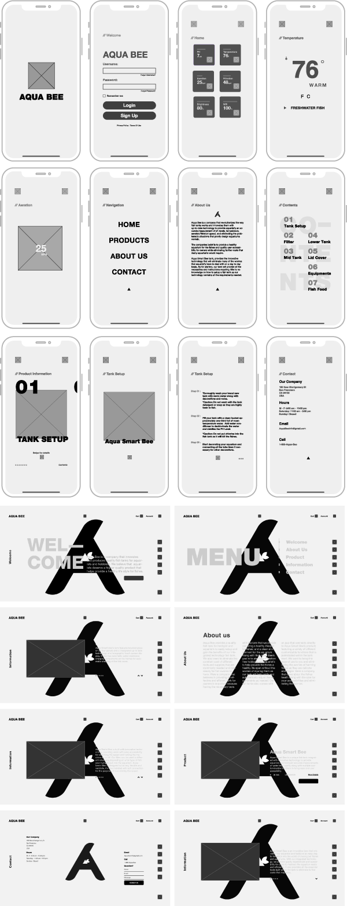
Design
Interface, product, and website design for Aqua Bee
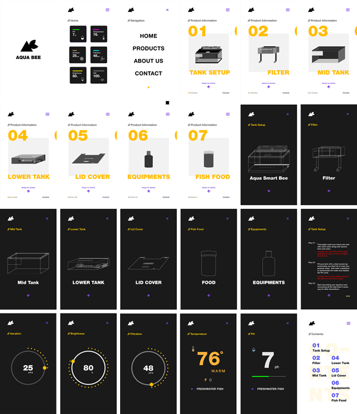
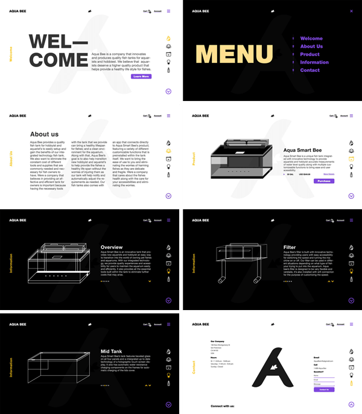
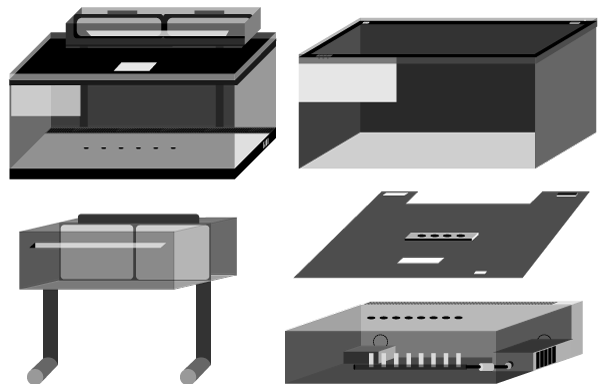
key learnings
What I've learned throughout this project.
Define and understand the product
I've learned that during the initial phases of designing a product, it's essential to understand
what capabilities, possibilities, and limitations could be done before working on developing the
interface.